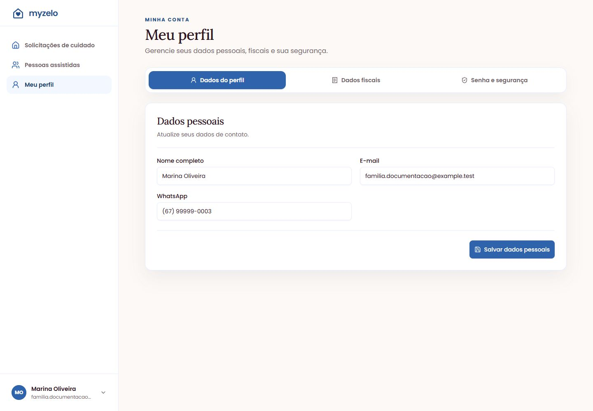

Configurações
Atualizar nome, contato e e-mail
Mantenha os dados de contato do responsável pela conta familiar.
Salvar dados pessoais
- Abra Meu perfil e a aba Dados do perfil.
- Na seção Dados pessoais, confira Nome completo, E-mail e WhatsApp.
- Altere o que for necessário e clique em Salvar dados pessoais.
- Confira a mensagem de sucesso e os valores exibidos.


Quando você altera o e-mail
- Informe o novo endereço em E-mail e salve os dados pessoais.
- Abra a mensagem enviada ao novo endereço e clique em Verificar e-mail.
- Até confirmar, use o alerta do topo ou Reenviar e-mail no perfil se precisar de outra mensagem.
Qual cadastro você está alterando?
Este formulário atualiza o responsável pela conta. Para alterar os dados de Helena, por exemplo, abra Pessoas assistidas. Para mudar o contratante ou endereço fiscal, use Dados fiscais.
Resultado esperado
Os dados da conta ficam atualizados; se o e-mail mudou, o novo endereço fica pendente de confirmação.
Regras que você precisa conhecer
- Não é permitido usar um e-mail já cadastrado em outra conta.
- O nome da pessoa marcada como titular acompanha o nome da conta.
- Mudar o contato não muda os dados históricos de solicitações já enviadas.